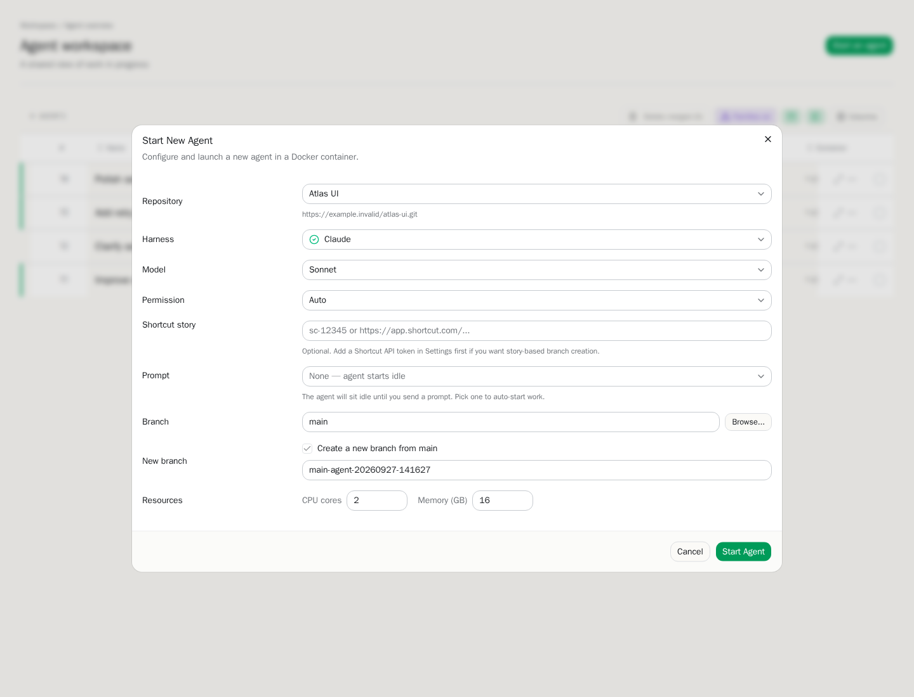
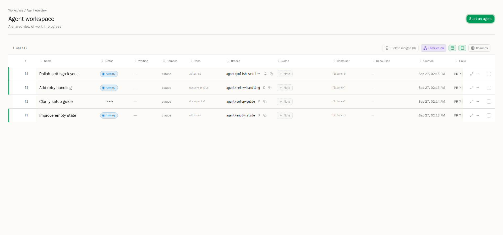

I wanted to make it easier to put AI coding tools to work on the kinds of software tasks developers already handle: fixing a bug, exploring a change, or preparing a pull request. The result is Switchboard, an internal product: a browser-based control panel where each developer starts and manages their own coding agents.
I built it as part of my day job, using work resources. This write-up and its visuals are deliberately generic: no company name, repositories, customer information, source code, or real task data.
The problem: useful tools, awkward workflow
An AI coding assistant can help with implementation, but a developer still has to set up the right codebase, give the assistant a well-scoped task, keep track of what it is doing, and review the resulting changes. When you have more than one task in flight—or several people trying different tools—that setup and coordination can become its own job.
I wanted a consistent way for each developer to start a coding session against a selected project, see their own agent status, and open the right workspace when it was time to steer or review an agent.
How it works
At a high level, Switchboard is a web control plane backed by a database and a separate runtime that manages agent workspaces. Each developer has their own agents and isolated workspaces. The interface collects the developer’s choices—such as the project, task, and coding-agent setup—and sends a request to the server. The server records the work and asks the runtime to provision an isolated container. That workspace gets a checkout of the project and, where appropriate, its own working branch. The agent operates there rather than directly in the developer’s everyday checkout.
The implementation pairs a SvelteKit and TypeScript web app with PostgreSQL for application state and a Go runtime service that orchestrates Docker-based workspaces. In practical terms, the browser is each developer’s control surface; the runtime is responsible for preparing and running the isolated environment. This separation keeps the product’s workflow and its container lifecycle in distinct parts of the system.
The flow looks roughly like this:
- Choose a project and describe the task. A developer gives the agent a bounded piece of work and selects the project and available agent configuration.
- Prepare a workspace. The service coordinates with the runtime to create an isolated environment and set up the project checkout.
- Let the agent work—with a human in the loop. The agent can inspect and change files in its workspace. The developer can check progress, provide direction, and use the workspace’s tools to inspect the changes.
- Review the result. Changes are evaluated by people and the normal engineering workflow. An agent’s output is a proposal, not an automatic approval or merge.

Each developer’s dashboard is a personal overview of their own active and completed agents. They can narrow the list to what matters and move from an agent’s status into its working session. Keeping this view personal gives each person a clear picture of their own work without making agents shared between users.

Where AI fits—and where it doesn’t
AI is the implementation assistant, not the owner of the engineering decision. A developer supplies context and intent, watches for misunderstandings, checks the diff, runs or reviews the relevant checks, and decides what is ready to move forward. Isolating workspaces helps keep parallel experiments separate; it does not make generated changes correct by default.
I also used AI as part of building the product. I treated it as a development tool: useful for accelerating implementation and exploring approaches, while I remained responsible for understanding the system, integrating the pieces, and checking the behavior. That distinction matters to me. The interesting result isn’t “AI wrote an app”; it’s a workflow that lets people use coding agents while keeping project context, isolation, visibility, and human review in the loop.
Consistent tools that help people get started
Switchboard is used across our development team, but agents belong to individual users: each developer starts and manages their own. The shared part is the tooling around those agents. We can control which skills and AI flows are available, helping everyone follow a consistent approach without sharing agent sessions or workspaces.
That consistency also helps when new employees join. Instead of having to discover every tool, skill, and workflow on their own, they can start from the same established options as the rest of the team. The goal is to make the process visible and repeatable while still giving each developer ownership of their own agent work.
The productivity gain is practical: less repeated setup and less friction when starting and following agent-assisted work, with clearer guidance on how to use skills and AI flows. I don’t have a defensible before-and-after measurement to publish, so I won’t attach a percentage or claim a specific number of hours saved. The value is a consistent team workflow that leaves developers more attention for framing tasks and reviewing outcomes.
What I learned
The interface is only one part of the product. A usable agent workflow depends on the less-visible pieces too: workspace creation, project setup, persistent state, status updates, and a reliable path from “start work” to “review changes.” A good tool should make those transitions understandable instead of asking every developer to reconstruct them by hand.
I’ve also learned to think of agent work as ordinary engineering work with a different collaborator. Clear task boundaries still matter. Isolation still matters. Reviewing changes still matters. AI can change how quickly a first pass appears, but it doesn’t remove the need for judgment or ownership.
This is an ongoing project, and the most important test is whether the workflow is useful to the people doing the work. For now, I’m glad it has grown into a tool the team can rely on while keeping each person’s agents and workspaces separate.